3D Interactive Animation and CG Fundamentals
Screening
Some ideas and considerations for your project scope...
Camera perspective, staging... who is your player playing as?
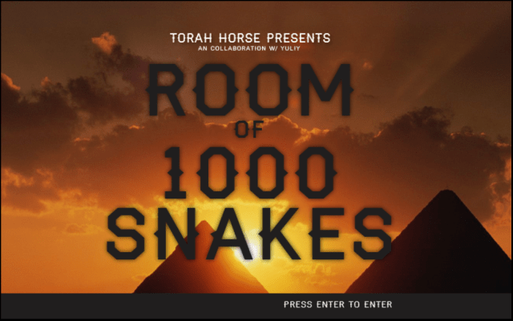
CG object as digital toy
... or digital creature!
Optional custom controller
more examples to come!
Some student projects for inspiration
A 5-minute experimental horror game exploring the rhetorics of progress, control, and societal pressure. Like the title suggests, the player's only mode of control is through pressing W to progress the game with occasional mouse movements.

A game installation that centers on an insect with wings who cannot fly.

A two-player game that expresses an intimate human relationship. While the goal of the game is ambiguous, each player uses a single button on a custom controller to make the characters collide with one another.
CG Fundamental Concepts
What is a 3D object?
In computer graphics, a 3D object is a polygonal mesh, made up of single polygons connected between each other.
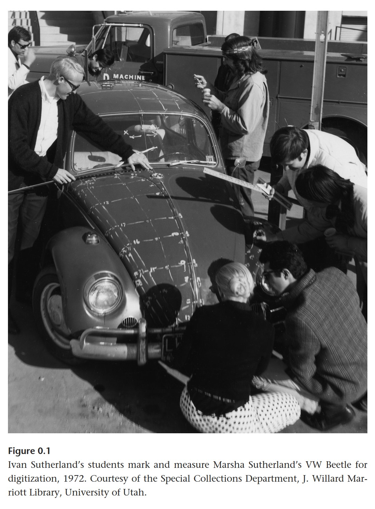
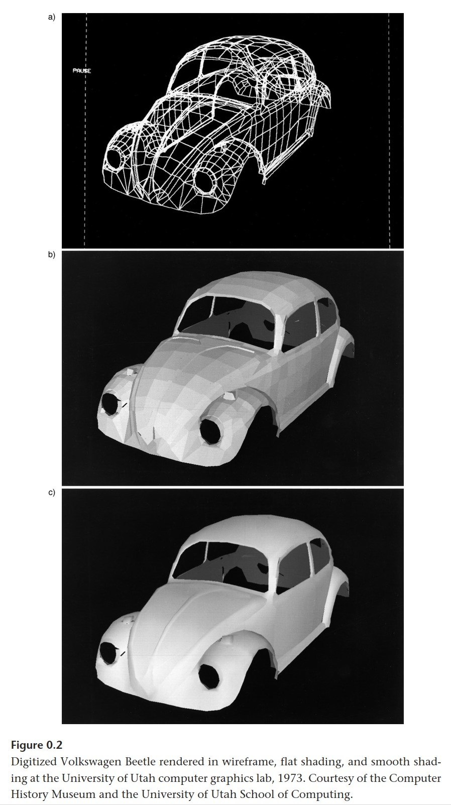
A polygonal mesh is made up of 3 components:
- Vertexes:
a point in 3D space - Edges:
a line between 2 vertexes, connecting 2 faces. - Faces (aka Polygons, aka Planes):
a surface created between edges.
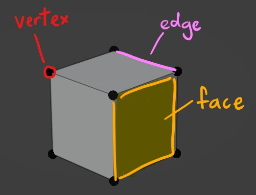
Polygons are also referred to as N-gons, i.e. a polygon defined by N number of sides (where N is a whole number.)
An N-gon with 3 sides is called a triangle; an N-gon with 4 sides is called a quad.
Topology
Topology refers to the arrangement of vertices and edges to create the mesh surface.
Good topology concerns the flow of your mesh. Good mesh flow will give better results in mesh deformation, shading, and seams for UV unwrapping.
If you're using an auto-rigging software like Mixamo, bad topology will cause a lot of problems...
Below are some principles for good topology:
Edge Loops
An "edge loop" refers to a ring of connected edges. A clean edge loop is made up of Quads, not Triangles or any other N-gon.
"Face loops" are formed between pairs of adjacent edge loops.
Benefits of edge loops include:
- Quick Selection
Most modelling software programs offer the option for edge-loop selections to speed up modelling. This also makes adjusting your polygon density across your mesh a lot easier by simply adding / reducing edge loops. - Better deformation
Especially important in areas of the mesh that will bend/compress/stretch the most, e.g. limb joints like armpits, knees, elbows, crotch/hips/butt, mouth corners/cheeks. Usually good to have denser edge-loops in these areas.
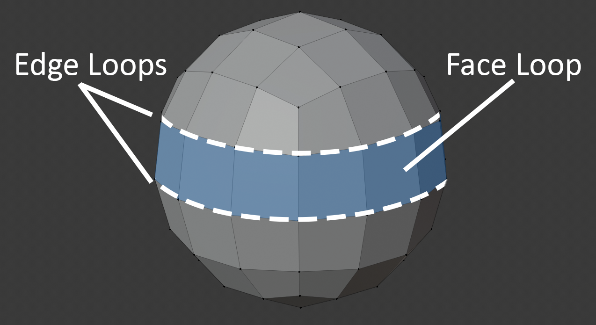
Polygon Density
In areas where there's curvature or more detail required, add more polygons.
In rigid, straight areas, have less polygons.
Try to avoid any sudden, extreme changes in polygon density across your mesh -- the results will become apparent if you choose to apply smooth-shading on your object. Gradate any shifts in polygon density as much as possible to maintain an evenly distributed topology.
Polycount
Polycount (short for "polygon count") refers to the total number of faces in your mesh... which is also determined by your vertex count.
There is a difference in the way modelling software and game engines calculate polycount--
Unlike modelling software, game engines render all meshes into triangles. Therefore, in games, a mesh's polycount refers to the total number of triangles in a mesh.
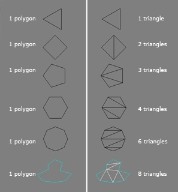
High-poly Meshes
Pros:
- Good for sculpting and vertex painting.
- Better for cloth simulation.
Cons:
- Longer to render due to light/shadow calculations and bulkier vertex information. This is prone to causing lag in game engines like Unity.
Examples:
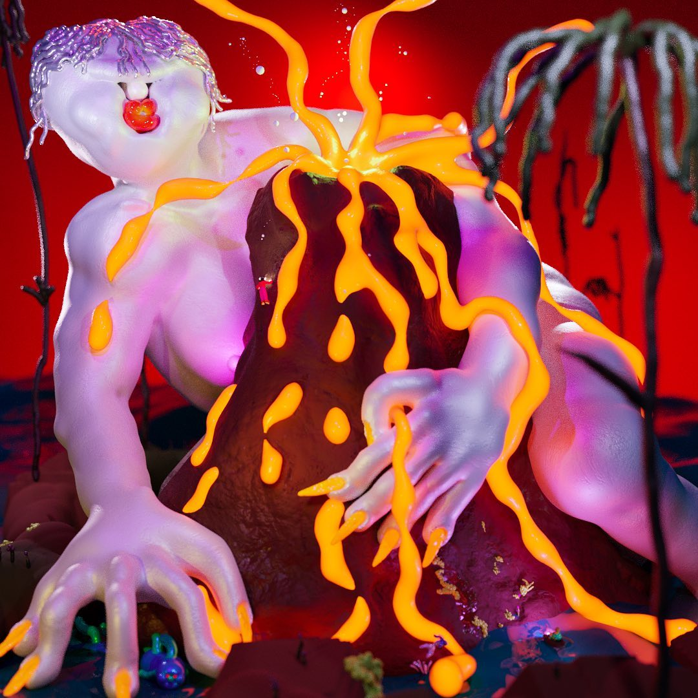
Low-poly Meshes
Pros:
- Shorter render times, perfect for game engines like Unity.
- Uses less disk space.
- Constraints of low-poly design can create opportunities for distinct stylisation.
- Illusion of detail and smoothness can be created through textures (e.g. smooth shade, normal maps).
Cons:
- Bad for sculpting and vertex painting.
Examples:

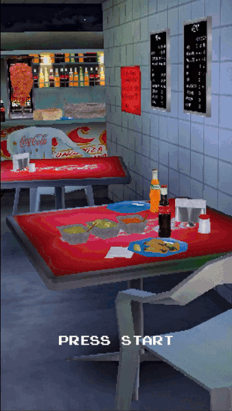
Normals
Normals are directional vectors with a length of 1. In 3D computer graphics, they determine how our mesh is rendered under different camera perspectives and lighting directions.
Face Normals
Every face has a normal that is perpendicular to its surface. They indicate which side of the face our "outward" surface is pointing towards.
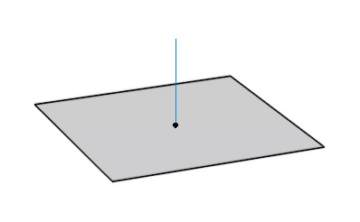
If any polygons on your mesh seem to have their textures rendered inside-out, it's likely the result of back-face culling (a rendering technique that does not draw any polygons facing away from the viewer.) This means that their normals are pointing inwards, and thus need to be corrected by flipping them the other way around.
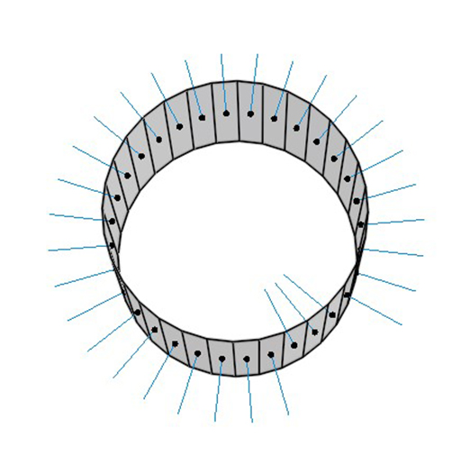
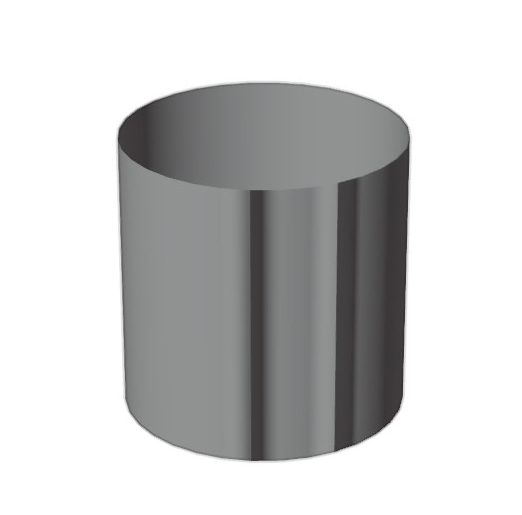
Vertex Normals
Each vertex per polygon has a normal that determines how our surface receives light.
For example, below is a mesh made up of two quads consisting six vertices, but there are eight vertex normals in total.
1 normal per vertex * 4 vertices per quad * 2 quads = 8 vertex normals in total
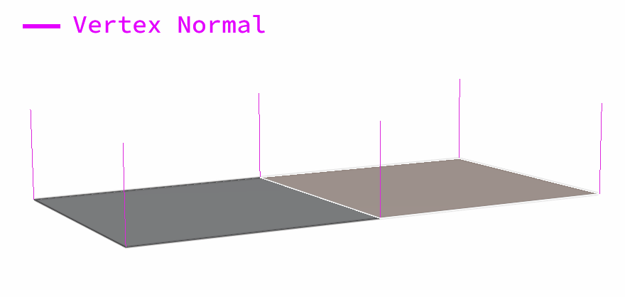
How our mesh surface is lit depends on the angle between the light vector and our vertex normal. The closer this angle approaches zero, the more light our vertex receives.
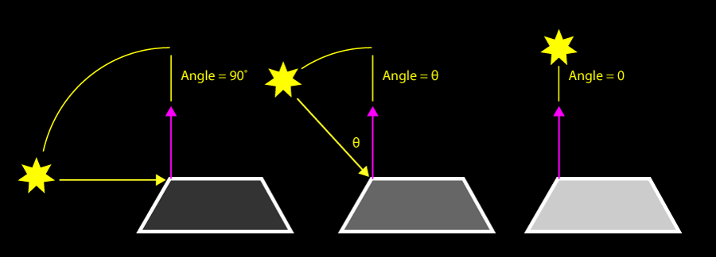
In flat shading, vector normals face the same direction as their polygon's normal to give "hard" edges.
In smooth shading, vector normals are calculated using the average of polygon normals that share this vertex. This creates the appearance of "soft" edges, even when working on low-poly models.
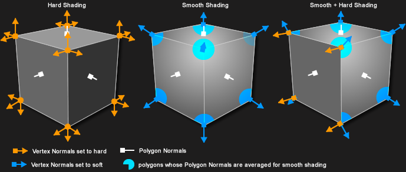
UVs
When we UV unwrap our mesh, we are obtaining a 2D layout of our mesh's geometry called a UV map.
This UV map tells us which how a 2D image (such as a base texture or normal map) should be mapped onto our mesh's surface.
U and V refer to the X (width) and Y (height) coordinates of a 2D image. Because X and Y are already being used to represent 3D spatial coordinates, we use U and V for mapping 2D coordinates of texture images.
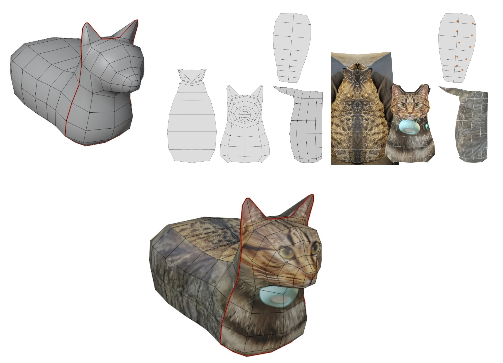
Normal Maps
A normal map is an image that stores a direction at every pixel. The red, green, and blue channels are used to control the direction of each pixel's normal.
Normal maps are used to create the illusion of high-resolution details on low-resolution models.
You can download normal maps online for repeating textures, paint your own on Substance Painter, or bake normal maps from high-poly meshes onto lower-poly meshes in 3D software.
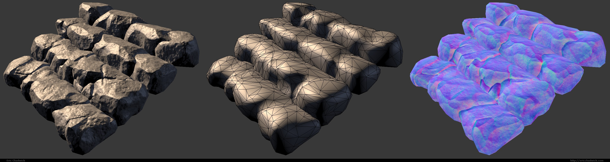
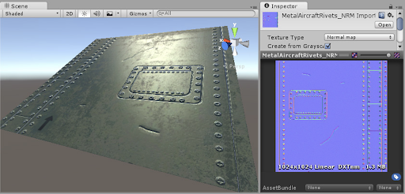
File Formats
FBX
☑️ Rig data
☑️ Animation Timelines
☑️ Vertex data
☑️ Textures, UV maps, some material data
OBJ
☑️ Vertex data
☑️ UV maps, some material data
☑️ Export includes an .MTL file, which .OBJ references for its material / texture data.
No animation data supported.
BLEND
Unity Editor also supports .blend file imports. This format is useful for setting up static environment models in your scene, allowing you to continuously add to your Blender file without having to re-export it every time there's new changes.
However, this import process has been notoriously buggy, and can be unpredictable depending on your version of Blender and Unity... but it's worth a try!